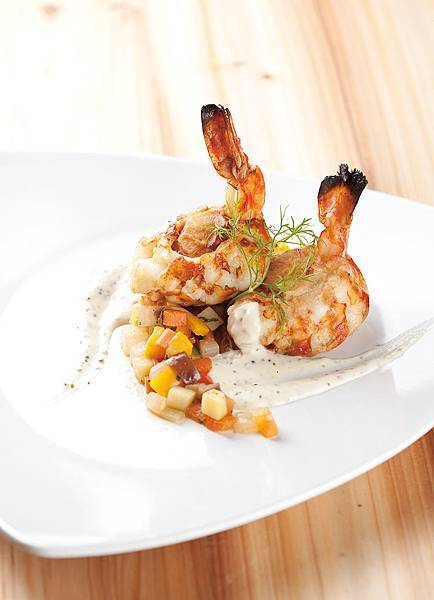

西班牙海鮮烘蛋介紹
第一道料理是西班牙海鮮烘蛋，矇著眼就能完成的烘蛋料理想新手主婦們都能快速上手呦!
西班牙海鮮烘蛋介紹
第一道料理是西班牙海鮮烘蛋，矇著眼就能完成的烘蛋料理想新手主婦們都能快速上手呦!大家好!這邊是我個人私心推薦的四道美食 喜歡都可以收藏起來喔!
西班牙海鮮烘蛋介紹
第一道料理是西班牙海鮮烘蛋，矇著眼就能完成的烘蛋料理想新手主婦們都能快速上手呦!
 燻肉明蝦鑲干貝奶油芥茉醬佐燉蔬菜 第二道料理是燻肉明蝦鑲干貝奶油芥茉醬佐燉蔬菜，除了好吃，營養價值更是嚇嚇叫 不僅可提高腎機能，更能預防動脈硬化和強化體質呢。
 西式香草青醬佐牛排
第三道料理是西式香草青醬佐牛排，是一道在家約會的浪漫料理呦!
西式香草青醬佐牛排
第三道料理是西式香草青醬佐牛排，是一道在家約會的浪漫料理呦!
 義式香草蒸鱸魚
第四道料理是義式香草蒸鱸魚，以義大利香料清蒸，魚肉Q彈細嫩，湯汁清爽鮮甜，喜歡吃魚的朋友可以嘗試看看呦!
義式香草蒸鱸魚
第四道料理是義式香草蒸鱸魚，以義大利香料清蒸，魚肉Q彈細嫩，湯汁清爽鮮甜，喜歡吃魚的朋友可以嘗試看看呦!
心得 完成囉!!!!!